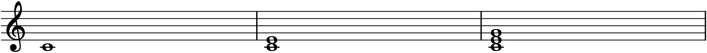
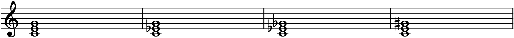

Part 1 gave you single notes and the intervals between pairs of them. Harmony begins the moment you sound three or more notes at once — a chord — and the study of how chords are built, chosen, and connected is what the next six chapters are about. Almost all of it rests on one small, sturdy object: the triad, a three-note chord that is the atom of Western harmony exactly as the interval was the atom of the melody. Master the triad and its four flavours, and you have the vocabulary from which every progression in Part 2 is assembled.
11.1Stacking thirds
A triad is built by stacking two thirds. Start on any note — call it the root — skip a letter to land a third above it, then skip another letter for a third above that. From C you get C–E–G; the three notes are the root (C), the third (E, a third above the root), and the fifth (G, a fifth above the root). That is the whole construction: root, third, fifth, each a third apart, all drawn from every-other letter.

When a triad is stacked this way, with the root at the bottom, it is in root position, and its notes land on three adjacent lines or three adjacent spaces — the tidy “snowman” of Figure 11.1. That visual shape is worth remembering: whenever you see three notes stacked on consecutive lines or consecutive spaces, you are looking at a triad in root position, and the bottom note names its root.
11.2The four qualities
Every triad is a root, a third, and a fifth — but which thirds you stack decides the chord’s quality, and there are exactly four possibilities. Recall from Chapter 9 that a third can be major (4 half steps) or minor (3). Stack them in different orders and you get:
- Major triad — a major third on the bottom, a minor third on top (C–E–G). Bright, stable, the sound of “resolved.”
- Minor triad — a minor third on the bottom, a major third on top (C–E♭–G). Stable too, but darker, more shadowed — the difference is entirely that lowered third.
- Diminished triad — two minor thirds (C–E♭–G♭). Tense and unstable, because root to fifth is now a tritone (Chapter 9’s restless interval), which makes the chord lean hard toward resolution.
- Augmented triad — two major thirds (C–E–G♯). Strange and suspended, its root-to-fifth stretched to an augmented fifth; it belongs to no ordinary key and sounds dreamlike or unsettled.

Notice in Figure 11.2 how little has to change. Major and minor differ by one semitone — the third. Diminished lowers the fifth as well; augmented raises it. There is also a second way to hear the four: major and minor both have a perfect fifth from root to top and differ only in the third; the diminished has a diminished fifth (the tritone), and the augmented an augmented fifth. Either lens works — by the stacked thirds, or by the outer fifth — and both tell you the same thing.
11.3How they sound
These are not just recipes; they are four distinct emotional colours, and training your ear to tell them apart is the point.
- Major is the bright, open, “happy” chord — the sound of arrival and rest.
- Minor is its shadow: equally stable and consonant, but grave, tender, or sad.
- Diminished is unstable and anxious. The tritone inside it wants out, so the chord rarely sits still — it is a chord of transit, pushing toward the next one.
- Augmented is the odd one, ambiguous and slightly eerie, neither major-happy nor minor-sad. It is used sparingly, for exactly that strangeness.
Major and minor are by far the most common — the overwhelming majority of chords you will write are one or the other. Diminished appears at key moments of tension (you will meet its natural home in the next chapter), and augmented is a rare colour. But all four are built the same way, from the same two kinds of third.
11.4Spelling a triad on any root
Because a triad is just a recipe of intervals, you can build one on any note by measuring up from the root. Want a G-major triad? Root G, up a major third to B, up a minor third to D: G–B–D. A D-minor triad? Root D, up a minor third to F, up a major third to A: D–F–A. A B-diminished triad? Root B, two minor thirds: B–D–F.
The letter names come for free — a root-position triad always uses every other letter (C-E-G, G-B-D, D-F-A), skipping one each time — so spelling a triad is really two questions: which three letters (skip-a-letter from the root), and then which of them need a sharp or flat to make the thirds the right size. The letters give you the skeleton; the quality tells you where the accidentals fall.
11.5Why triads matter
A triad is the smallest self-sufficient chunk of harmony — enough notes to have a clear quality and a clear root, few enough to be heard as a single unit. Nearly all the harmony in this book is triads (and, later, four-note chords built by stacking one more third). What remains is to see how triads behave: which ones naturally belong to a key, how they pull toward one another, and how to string them into progressions that go somewhere. That is the next chapter, where the seven triads native to a key — and the gravity between them — turn this static vocabulary into motion.
In MuseScore
MuseScore builds chords note by note, on top of a note you have already entered.
- In note-input mode (N), choose a duration and enter the root as usual — say a C.
- Add the other chord tones by holding Shift and typing their letters: Shift+E then Shift+G stacks E and G onto the C, giving a C-major triad. (Shift+letter adds a note to the current chord instead of moving on to the next beat.)
- Faster, for chords that belong to the key: with the root selected, press Alt+3 to stack a third and Alt+5 to add the fifth — MuseScore fills in the diatonic notes automatically (Chapter 9’s box).
- Change the quality by nudging one note. Select a chord tone and press ↓ or ↑ to move it a half step: lower the third for minor, lower the third and fifth for diminished, raise the fifth for augmented — exactly the alterations in Figure 11.2.
Try it: build C–E–G and press Space to hear a major triad. Select the E and press ↓ once — E becomes E♭ and the chord turns minor before your ears. Lower the G to G♭ as well for the tense diminished chord, then undo back to major. Four qualities, one root, a couple of keystrokes apart.